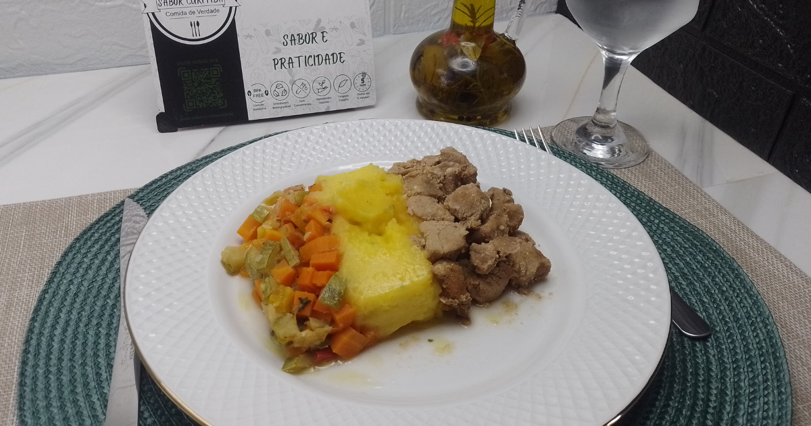

Mignon suíno ao tempero oriental com purê de batata salsa e legumes salteados.
400g

Delicioso mignon suíno ao tempero oriental, preparado com shoyu, gengibre e alho, garantindo um sabor marcante e equilibrado. Acompanha purê cremoso de batata salsa e um mix de legumes salteados, que trazem leveza e frescor ao prato.
Uma combinação perfeita entre o toque oriental e o sabor caseiro que você já conhece da Sabor Curitiba. Ideal para quem busca praticidade sem abrir mão de qualidade e ingredientes selecionados.
Pronta para aquecer em poucos minutos e aproveitar uma refeição completa, saborosa e nutritiva.
Embalagem livre de Bisfenol A, mais segurança para sua saúde.
Material sustentável e próprio para micro-ondas.
Alimentos preparados sem adição de conservantes artificiais.
Selecionamos ingredientes frescos e de alta qualidade.
Receitas com sabor artesanal e preparo cuidadoso.
Aqueça no micro-ondas e aproveite sua refeição.
{kind=link}
{kind=link}
{kind=link}
{kind=link}
{kind=link}
{kind=link}
{kind=link}